Ischemic Heart Disease
Table of Contents
Cardiac Anatomy

Athlerosclerosis
Athlerosclerosis occluds arteries, and when a large amount of a coronary artery is obstructed, angina can occur. The process of athlerosclerotic development is as follows:
- LDL accumulation and oxidation in the wall of a vessel
- Macrophage infiltration and uptake of the LDL deposit
- Formation of foam cells
- Smooth Muscle proliferation and Cap formation
- Cap rupture
- Thrombosis
General Angina
Pathophysiology
Oxygen demand to cardiac tissue exceeds the ability of coronary circulation to supply oxygen to the cardiac myocytes, leading to ischemia and chest pain
Oxygen Supply and Demand
Preload: Decreased preload is caused by veinous vasodilation, resulting in decreased oxygen consumption and increased myocardial perfusion
Afterload: Decreased afterload is caused by arterial vasodilation, leading to decreased oxygen consumption
Heart Rate: Decreased HR leads to decreased oxygen consumption and increased coronary perfusion
Risk Factors
- Age: ≥ 55 for men or ≥ 65 for women
- Smoking
- DM
- HTN
- Kidney Disease
- Obesity
- Sedentary Lifestyle
Stable Angina
Pathophysiology
Stable angina is a demand ischemia caused by a temporary increase in O2 demand by cardiac myocytes in the prescense of a diminished O2 supply, most commonly the result of severe ASCVD leading to significant decreases in blood flow (>70%) through the coronary arteries without myocardial necrosis. Stable angina can be of either a fixed threshold, a variable threshold, or both. Stable angina should have stable characteristics for at least 2 months.
Clinical Presentation and Dx
Dx
- Look for risk factors
- ST-Depression During Angina
- Stress Test
- Cardiac Catheterization
- Electron Beam CT (AHA does not reccomend because results will not change recommendation)
PQRST
- Precipitating Factors: Exertion etc
- Palliative Measures: Rest and/or SL NTG
- Quality of Pain: Squeezing, heaviness, tightening, etc
- Region and Radiation: Substernal, ocassionally radiating to left arm
- Severity of Pain: Generally >5
- Timing: Typically 5-10min, must be < 20
Common Precipitating Factors
- Cold Air (leads to increased HR)
- Large Meals
- Exertion
- Smoking
EKG Findings
ST-Depression only during episodes of angina, EKG is otherwise unremarkable
Treatment
Common Drug Classes for Treatment
- Organic Nitrates: Dilation of Venous Blood Vessels to Reduce Preload
- Glyceryl Trinitrate for acute attacks
- IS(M/D)N for prophylaxis
- DHP CCBs: Arterial Vasodilation to Decrease Afterload
- Non-DHP CCBs: Negative Inotropy and Chronotropy to Decrease Oxygen Consumption
- β-Blockers: Negative Inotropy and Chronotropy to Decrease Oxygen Consumption
- Ivabradine: Negative Chronotropy via HCN Inhibition to Decrease Oxygen Consumption
- Ranolazine: Inhibits late-Na current to inhibit reverse calcium transport during ischemic attacks
- Statins: Decrease Athlerosclerosis
- Paclitaxel: Binds and Stabilizes Microtubules to prevent mitosis in stent placement
- Sirolimus: Binds FKBP12, inhibiting mTOR and arresting the cell cycle at the G1-S transition
Algorithm

Prinzmetal’s (Variable) Angina
Pathophysiology
Prinzmetal’s angina is a supply ischemia resulting from spontaneous vasospasm in the coronary vessels, typically the result of athlerosclerotic insult to the endothelium, leading to a short-lived ischemia. Prinzmetal’s angina typically presents at night when parasympathetic tone is higher.
Treatment
Common Drug Classes for Treatment
- Organic Nitrates: Dilation of Venous Blood Vessels to Reduce Preload
- Glyceryl Trinitrate for acute attacks
- IS(M/D)N for prophylaxis
- DHP CCBs: Arterial Vasodilation to Decrease Afterload
- Non-DHP CCBs: Negative Inotropy and Chronotropy to Decrease Oxygen Consumption
- β-Blockers: Negative Inotropy and Chronotropy to Decrease Oxygen Consumption
- Ivabradine: Negative Chronotropy via HCN Inhibition to Decrease Oxygen Consumption
- Ranolazine: Inhibits late-Na current to inhibit reverse calcium transport during ischemic attacks
- Statins: Decrease Athlerosclerosis
Unstable Angina
Pathophysiology
Unstable angina is supply ischemia characterized by a rapid worsening of athlerosclerosis of a coronary vessel in which the cap of the deposit ruptures, leading to thrombus formation. Unstable angina typically onsets suddenly and typically warns of an impending MI.
Treatment
Common Drug Classes for Treatment
- ASA: Decrease Platelt Aggregation / Inhibit Thrombus Formation
- P2Y12 Inhibitors (Clopidogrel, Prasgurel, Ticagrelor): Inhibit Platelt Activation / Inhibit Thrombus Formation
- Heparin: Inhibition of Thrombin via AT-III to inhibit coagulation cascade